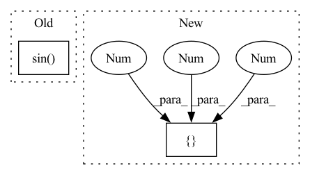

Pattern ID :15160

Before Change
delta = self.Rweight.detach() - w2
w3 = w2 + torch.abs(torch.sin(self.rotate)) * delta
self.Rotate = torch.mean(torch.abs(torch.sin(self.rotate)))
//* binarize
bw = BinaryQuantize().apply(w3, self.k.to(w.device), self.t.to(w.device))
if args.a32:
After Change
w1 = w - w.mean([1,2,3], keepdim=True)
w2 = w1 / w1.std([1,2,3], keepdim=True)
a1 = a0 - a0.mean([1,2,3], keepdim=True)
a2 = a1 / a1.std([1,2,3], keepdim=True)
a, b = self.a, self.b
X = w2.view(w.shape[0], a, b)
if self.epoch > -1 and self.epoch % args.rotation_update == 0:
In pattern: SUPERPATTERN
Frequency: 3
Non-data size: 2
Instances
Fragment ID: 51351055
Project Name: lmbxmu/rbnn
Commit Name: 6c9607902cf8cf520ec24c6d6fdc7ee2b3f9f9b5
Time: 2020-09-07
Author: 791411501@qq.com
File Name: imagenet/modules/binarized_modules.py
M Class Name: BinarizeConv2d
N Class Name: BinarizeConv2d
M Method Name: forward(2)
N Method Name: forward(2)
M Parent Class: nn.Conv2d
N Parent Class: nn.Conv2d
M File Name: imagenet/modules/binarized_modules.py
N File Name: imagenet/modules/binarized_modules.py
M Start Line: 32
M End Line: 57
N Start Line: 32
N End Line: 37
'>
Before Change
delta = self.Rweight.detach() - w2
w3 = w2 + torch.abs(torch.sin(self.rotate)) * delta
self.Rotate = torch.mean(torch.abs(torch.sin(self.rotate)))
//* binarize
bw = BinaryQuantize().apply(w3, self.k.to(w.device), self.t.to(w.device))
if args.a32:
After Change
w = self.weight
w1 = w - w.mean([1,2,3], keepdim=True)
w2 = w1 / w1.std([1,2,3], keepdim=True)
a1 = a0 - a0.mean([1,2,3], keepdim=True)
a2 = a1 / a1.std([1,2,3], keepdim=True)
a, b = self.a, self.b
X = w2.view(w.shape[0], a, b)
'>
Fragment ID: 51351007
Project Name: lmbxmu/rbnn
Commit Name: 6c9607902cf8cf520ec24c6d6fdc7ee2b3f9f9b5
Time: 2020-09-07
Author: 791411501@qq.com
File Name: cifar/modules/binarized_modules.py
M Class Name: BinarizeConv2d
N Class Name: BinarizeConv2d
M Method Name: forward(2)
N Method Name: forward(2)
M Parent Class: nn.Conv2d
N Parent Class: nn.Conv2d
M File Name: cifar/modules/binarized_modules.py
N File Name: cifar/modules/binarized_modules.py
M Start Line: 32
M End Line: 57
N Start Line: 32
N End Line: 37
'>
Before Change
// See paper p13
thetas = torch.arange(self.n_heads, dtype=torch.float32) * (2.0 * math.pi / self.n_heads)
grid_init = torch.stack([thetas.cos(), thetas.sin(), thetas.cos()], -1) // TODO
// [NumHeads, FeatureLevels, NumPoints, Offset]
grid_init = (grid_init / grid_init.abs().max(-1, keepdim=True)[0]).view(self.n_heads, 1, 1, 3).repeat(1, self.n_levels, self.n_points, 1)
After Change
constant_(self.sampling_offsets.weight.data, 0.)
// See paper p13
grid_init = torch.cartesian_prod(torch.tensor([-1, 0, 1]), torch.tensor([-1, 0, 1]), torch.tensor([-1, 0, 1])).to(dtype=torch.float32)
if self.n_heads == 26: // sample in 26 directions
grid_init = grid_init[torch.nonzero(torch.abs(grid_init).sum(dim=1)).squeeze()] // Get rid of origin
elif self.n_heads == 6: // sample in 6 directions
'>
Fragment ID: 51351052
Project Name: bwittmann/transoar
Commit Name: fa86cda78f79e61cc6617f73268e684f56636b3f
Time: 2021-12-16
Author: bastian.wittmann@tum.de
File Name: transoar/models/ops/modules/ms_deform_attn.py
M Class Name: MSDeformAttn
N Class Name: MSDeformAttn
M Method Name: _reset_parameters(1)
N Method Name: _reset_parameters(1)
M Parent Class: nn.Module
N Parent Class: nn.Module
M File Name: transoar/models/ops/modules/ms_deform_attn.py
N File Name: transoar/models/ops/modules/ms_deform_attn.py
M Start Line: 66
M End Line: 70
N Start Line: 66
N End Line: 75